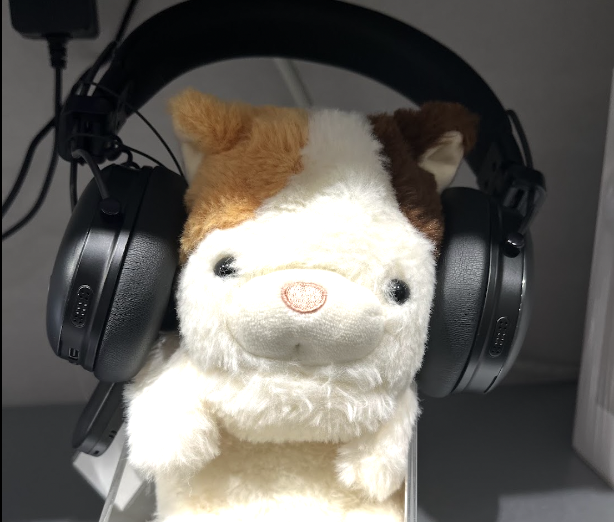

PORTFOLIO

神山まるごと高専3年
神山まるごと高専で、Web制作やUI/UXデザイン、企画づくりに取り組んでいます。本や地域、音声など、身近にあるものを人に届けるWebアプリ「ホンノバ」、健康情報をToDoに変えるUI「MAKE YOU」、Podcastメディア「KamiyamaCast」の運用などを通して、情報や体験を見つけやすく届けることを考えています。
Skills & Tools
UI/UX
Figmaを使った画面設計・プロトタイピング。
ユーザーの目的や使う場面を考えながら、画面構成や導線を設計すること
Web programming
HTML / CSS / JavaScriptを使ったWeb制作
Media operation
Podcastや映像・音声コンテンツの企画・編集・運用
Planning
課題や目的を整理し、サービスやプロジェクトの方向性を考えること
Graphic / Visual Design
Photoshop・Illustratorを使ったビジュアル制作
3D Motion
BlenderやAfter Effectsを使った簡単な3D・モーション制作
Contact
- razeria02@gmail.com
- Github
- rimiluu
- SNS
- @aa